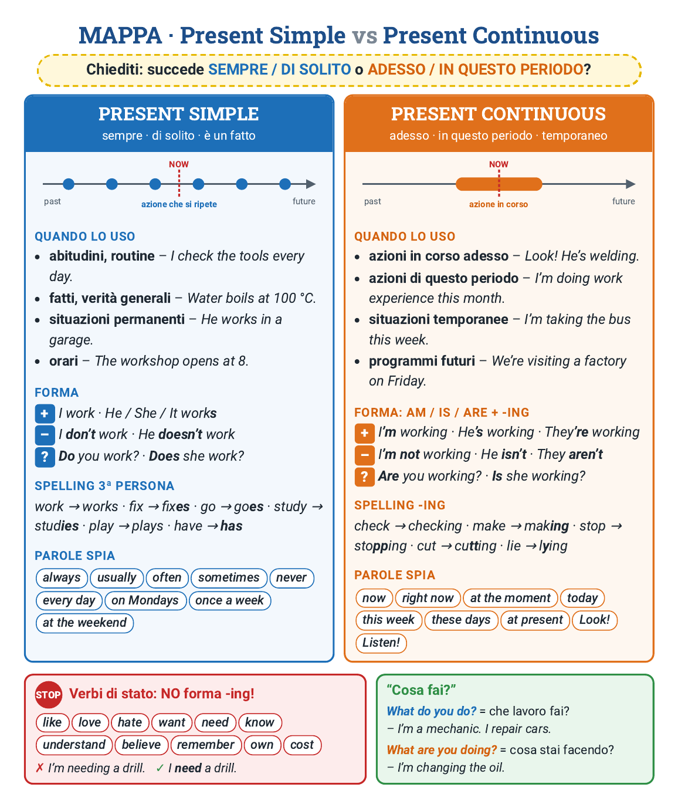

1La domanda
Prima di scegliere il verbo, fatti una domanda:
Succede SEMPRE / DI SOLITO?
→ Present simple
NOW
si ripete
I check the tools every day.
Controllo gli attrezzi ogni giorno.
Succede ADESSO?
→ Present continuous
NOW
è in corso
I’m checking the tools now.
Sto controllando gli attrezzi adesso.
Trucco: il continuous è come «sto + -ando / -endo». I’m working = sto lavorando.
2Present simple
Lo usi per abitudini, orari e fatti sempre veri.
Come si forma
+I / you / we / they work · he / she / it works
−I don’t work · he doesn’t work
?Do you work? · Does she work?
Risposte brevi: Yes, I do. / No, I don’t. · Yes, she does. / No, she doesn’t.
Attenzione
Con doesn’t e does il verbo perde la -s.
He doesn’t works → He doesn’t work.
Does she repairs…? → Does she repair…?
Esempi in officina:
- The technician checks the machines every morning. Il tecnico controlla le macchine ogni mattina.
- We don’t use the lathe without safety glasses. Non usiamo il tornio senza occhiali.
- Does the lesson start at 8? – Yes, it does. La lezione comincia alle 8? – Sì.
3La -s di he/she/it
Solo con he / she / it il verbo prende la -s.
4Present continuous
Lo usi per un’azione in corso adesso (o in questo periodo).
Formula: am / is / are + verbo-ing.
Come si forma
+I am (I’m) working · he is (he’s) working · they are (they’re) working
−I’m not working · he isn’t working · they aren’t working
?Are you working? · Is she working?
Risposte brevi: Yes, I am. / No, I’m not. · Yes, he is. / No, he isn’t.
Non dimenticare am / is / are
I working → I’m working.
She fixing the car → She’s fixing the car.
- Look! Marco is welding the pipe. Guarda! Marco sta saldando il tubo.
- Sorry, I can’t talk now. I’m changing a tyre. Scusa, ora non posso: sto cambiando una gomma.
5La forma -ing
Non si raddoppia con w, x, y: fix → fixing · play → playing.
6Quando uso quale
Present simple
- Abitudini: I check the tools every morning.
- Fatti veri: Water boils at 100 °C.
- Cose stabili: My uncle works for a heating company.
- Orari: The workshop opens at 8:00.
Present continuous
- Adesso: Look! He’s welding the frame.
- In questo periodo: This month I’m doing work experience.
- Cose temporanee: My car is at the mechanic’s, so I’m taking the bus this week.
- Programmi già decisi: We’re visiting a factory next Friday.
Stesso verbo, due tempi:
- I usually go to school by bus. Today I’m going by scooter.
- The machine makes 200 pieces an hour. Listen! It is making a strange noise.
7Parole spia
Queste parole ti dicono quale tempo usare.
Present simple
alwaysusuallyoftensometimesneverevery dayevery morningon Mondaysonce a weekat the weekend
Present continuous
nowright nowat the momenttodaythis weekthese daysat presentLook!Listen!
Dove va always / usually / never? Prima del verbo: He usually starts at 8. Ma dopo be: He is always on time.
8«Cosa fai?»
In italiano è una domanda sola. In inglese sono due.
What do you do?
= Che lavoro fai?
I’m an electrician. I install alarm systems.
What are you doing?
= Cosa stai facendo adesso?
I’m checking the fuse box.
9Verbi di stato
STOP: questi verbi non vogliono -ing
Parlano di cosa pensi, senti, vuoi o hai. Non sono azioni. Anche adesso, usa il simple.
likelovehatewantneedknowunderstandbelieverememberowncost
I’m needing a drill. → I need a drill.
Are you knowing the answer? → Do you know the answer?
This tool is costing 30 euros. → This tool costs 30 euros.
have: se vuol dire possedere → simple (She has a new van.). Se è un’azione (have lunch, have a break) → va bene -ing (She’s having lunch.).
10Errori tipici
11In breve
La versione corta. Due righe, tre regole.
🔁SEMPREI work. He works.
ogni giorno · di solito
⏱️ADESSOI’m working. He’s working.
ora · in questo momento
- he / she / it + s → he works
- adesso = am / is / are + -ing → he is working
- need, like, know: mai -ing → I need
12Mappa da stampare
Tutto in un foglio. Da stampare o da tenere sul telefono.

13Ricorda così
- Sempre / di solito → present simple: I work, he works.
- Adesso / in questo periodo → present continuous: I’m working.
- don’t / doesn’t e do / does per − e ? del simple.
- am / is / are per − e ? del continuous.
- Parole spia: every day → simple · right now → continuous.
- need, know, like… niente -ing.